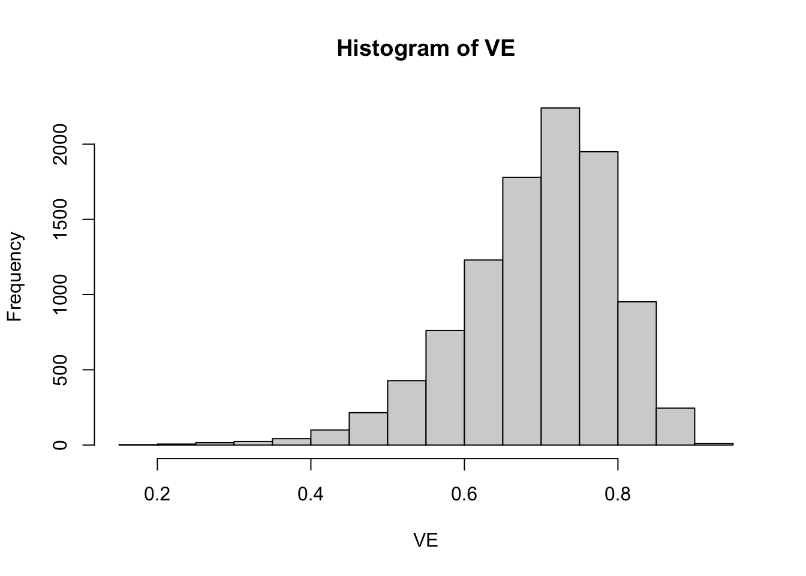

Why People Are Doubting the AstraZeneca Vaccine Report
Modeling the Garden of Forking Paths with Simulations
R
Causal Inference
COVID-19
Data Science
Author
Robert Kubinec
Published
November 27, 2020
In this blog post, I use Gelman and Loken’s garden of forking paths analysis to construct a simulation showing why skepticism of AstraZeneca’s vaccine results is warranted at this early stage. This simulation uses the numbers from their press release to illustrate how noise in treatment regimes can undermine serendipitous results. As Gelman and Loken describe, researchers can stumble on conclusions which they are then very able to provide post hoc justifications for. Unfortunately, when incentives to get results are strong, human beings are also very likely to focus on the positive at the expense of obtaining the full picture.
Where \(p_t\) is the proportion of cases in the treatment (vaccinated) group with COVID-19 and \(p_c\) is the proportion of cases in the control (un-vaccinated) group). In essence, if we assume the vaccinated group will have no more cases than the control group, this statistic will converge to 1 as \(p_t\) goes to zero, so VE of 100% would be a case in which there are no cases in the treatment group.
They don’t give us all the information to figure out how many people were infected with COVID-19 in treatment versus control, but we can infer \(p_t\) and \(p_c\) by solving two equations given the fact that we know that the proportion infected in the whole trial was equal to \(\frac{131}{11636}\) and the overall VE was 0.7:
Thankfully, this system has a single solution where \(p_t\) is equal to (~0.0026) and \(p_c\) is equal to (~0.0087). In other words, the proportion infected in the treatment group was about four times less than the control group. We’ll assume that these distributions are the correct ones, and then sample subgroup-varying \(p_{ti}\) and \(p_{ci}\) from Beta distributions that are fairly tight around these values. This will allow us to model treatment heterogeneity within the sample. The distribution of possible VEs given subgroup heterogeneity can be seen in the plot below:
# use the mean/variance parameterization of the beta distributionpt <-393/151268pc <-655/75634# Generate values for VE given beta distributions for pt/pcVE <-1-rbeta(10000,pt*5000,(1-pt)*5000)/rbeta(10000,pc*5000,(1-pc)*5000)hist(VE)

This plot shows that the true VE in the population is on average 0.7 but could vary substantially. It could be below 0.5 for a small subset of the population and above 0.9 for a small subset of the population. To simulate our data, we will draw VEs from this beta distribution separately for each of four possible subgroups \(i \in \{1, 2, 3, 4\}\) in a hypothetical study:
Four subgroups are chosen to be roughly equal to the size of the half-dose group in the AstraZeneca study given a sample size of 11,636. I add a further step in that I assume that the probability of VE being reported for a subgroup \(i\), which I term \(Pr(r=1)\), is increasing in the rate of VE. That is, as VE rises, the subgroup analysis is more likely to be reported. For these reasons, we can distinguish between the full range of VE estimates for a subgroup \(i\), \(VE_i\), and the particular subgroup \(i\) that is reported, \(VE_{ir=1}\):
This equation shows that the extent of the bias in using only reported results is equal to \((1 - Pr(r|VE_i))VE_{ir=0}\), or the probability that a result won’t be reported times the level of VE in the non-reported subgroups.
The R code to generate this model in terms of treatment/control COVID cases and whether or not subgroup analyses are reported is as follows:
# number of samplesN <-1000sim_data <-lapply(1:N,function(n) {# generate subgroup treatment/control COVID proportions sub_pt <-rbeta(4,pt*5000,(1-pt)*5000) sub_pc <-rbeta(4,pc*5000,(1-pc)*5000)# generate subgroup VEs VE <-1- sub_pt/sub_pc# generate COVID case data with binomial distribution covid_t <-sapply(sub_pt, function(pt) rbinom(n=1,size =floor(11636/4),prob=pt)) covid_c <-sapply(sub_pc, function(pc) rbinom(n=1,size =floor(11636/4),prob=pc))# output datatibble(draw=n,groups=1:4,sub_pt=sub_pt,sub_pc=sub_pc,VE=VE,VE_r=as.numeric(runif(n=4)<plogis(-250+300*VE)),covid_t = covid_t,covid_c=covid_c)}) %>% bind_rows
Given this simulation, only a minority (4%) of subgroup analyses are reported. The average VE for the reported subgroups is 77% as opposed to a VE of 69% across all simulations. As such, the simulation assumes that it is unlikely that subgroups with low vaccine efficacy will end up being reported, while subgroups with stronger efficacy are more likely to be reported.
For each random draw from the simulation, I can then fit a model that analyses only those analyses that are reported:
# modified code from Eric Novikvac_model <-"data { int g; // number of sub-groups array[g] int<lower=0> r_c; // num events, control array[g] int<lower=0> r_t; // num events, treatment array[g] int<lower=1> n_c; // num cases, control array[g] int<lower=1> n_t; // num cases, treatment}parameters { array[g] real<lower=0, upper=1> p_c; // binomial p for control array[g] real<lower=0, upper=1> p_t; // binomial p for treatment }transformed parameters { real VE = mean(1 - to_vector(p_t) ./ to_vector(p_c)); // average vaccine effectiveness across groups}model { p_t ~ beta(2, 2); // weakly informative, p_c ~ beta(2, 2); // centered around no effect r_c ~ binomial(n_c, p_c); // likelihood for control r_t ~ binomial(n_t, p_t); // likelihood for treatment}generated quantities { vector[g] effect = to_vector(p_t) - to_vector(p_c); // treatment effect vector[g] log_odds = log(to_vector(p_t) ./ (1 - to_vector(p_t))) - log(to_vector(p_c) ./ (1 - to_vector(p_c)));}"to_stan <-cmdstan_model(write_stan_file(vac_model))est_bias <-lapply(unique(sim_data$draw), function(i) {sink("output.txt") this_data <-filter(sim_data,draw==i,VE_r==1) stan_data <-list(g=length(unique(this_data$groups)),r_c=as.array(this_data$covid_c),r_t=as.array(this_data$covid_t),n_c=as.array(round(rep(floor(11636/4),length(unique(this_data$groups)))/2)),n_t=as.array(round(rep(floor(11636/4),length(unique(this_data$groups)))/2)))if(stan_data$g<1) {tibble(draw=i,VE=NA) } else { est_mod <- to_stan$sample(data=stan_data,seed=624018,chains=1,iter_warmup=500,iter_sampling=1000,refresh=500) draws <- est_mod$draws() %>% as_draws_dftibble(draw=i,VE=draws$VE) }sink()}) %>% bind_rows
I can then plot the density of the estimated reported VE from this simulation along with a line indicating the true average VE in the population:
As can be seen, it is much more likely that VEs higher than the true average VE will be reported. The extent of the bias is driven by the simulation and how much weight the simulation puts on discovering high VE values. Given the profit that AstraZeneca stands to gain, and the fame and prestige for the involved academics, it would seem logical that reported analyses from subgroups will tend to be subgroups that out-perform the average.
Note that this simulation shows how AstraZeneca could be reporting valid statistical results, yet these results can still be a biased estimate of what we want to know, which is how the vaccine works for the population as a whole. The possibility of random noise in subgroups and the fact that subgroups are likely to respond differently means that we should be skeptical of analyses that only report certain subgroups instead of all subgroups. Only when we understand the variability in subgroups can we say whether the reported finding in AstraZeneca’s press release represents a real break-through or simply luck. Of course, they can test it directly by doing another trial, which it seems to be is their intention. Serendipity, though, isn’t enough of a reason to trust these results unless we can examine all of their data.